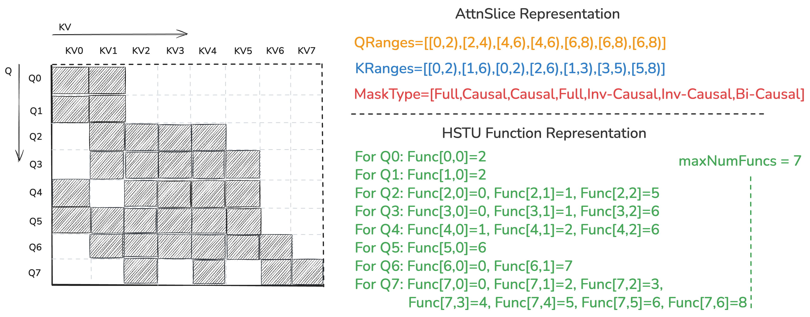
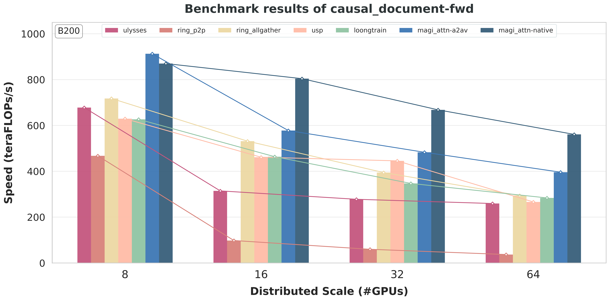

通过 FFA_FA4 后端支持 Blackwell#
引言#
在 MagiAttention-v1.1.0 发布之前，MagiAttention 仅支持 Hopper GPU，因为注意力内核后端 Flex-Flash-Attention（FFA） 构建在开源的 Flash-Attention 3（FA3）[Shah et al., 2024] 之上，专为 SM90 计算能力定制。
为了尽早支持最新的 Blackwell GPU，我们没有原生扩展 FFA 内核（这是未来计划，以提供最大的灵活性和性能潜力），而是积极与 MINIMAX 同行和 NVIDIA 团队合作，实现了一个名为 FFA_FA4 的临时注意力内核后端，构建在一个分叉的 Flash-Attention 4（FA4） 之上，并通过 HSTU Function 表示 配备了灵活的掩码支持。
这使我们能够快速将 Blackwell 支持集成到 MagiAttention 中，让用户有机会利用 Blackwell 增强的 SM100+ 能力进行注意力计算，同时我们在后台继续开发 Blackwell 的原生 FFA 扩展。
用户接口#
安装#
目前安装带有 FFA_FA4 的 MagiAttention 需要额外步骤。详情请参阅 安装指南；我们计划在未来简化此流程。
启用#
要在 Blackwell GPU 上启用 FFA_FA4 后端，用户只需设置环境变量 export MAGI_ATTENTION_FA4_BACKEND=1。
预编译#
由于 FFA_FA4 依赖于基于 Cute PythonDSL [Corporation, 2026] 的 Flash-Attention 4 分叉版本，它需要对不同掩码模式的注意力内核进行 JIT 编译，因此我们建议您在生产使用前预编译 FFA_FA4 内核的常见情况，以避免运行时 JIT 重新编译开销。详情请参阅 安装指南。
实现#
HSTU Function 表示#
在 FFA 中，我们引入了一种新颖的注意力掩码 AttnSlice 表示，它支持高效的内核执行以及可分布的灵活掩码支持。然而，它需要对目前仅在 Hopper 上可用的 FA3 内核进行重大修改，包括 AttnSlice 级并行，且不能轻松直接应用于 Blackwell 上的 FA4 内核。
为了尽早在 Blackwell 上支持灵活掩码，NVIDIA 团队和我们引入了 HSTU Function 表示，使我们能够在不大量修改底层 FA4 内核的情况下处理各种掩码模式。
具体来说，我们将注意力掩码表示为形状为 (seqlen_q, seqlen_k) 的布尔矩阵，其中每一行形状为 (seqlen_k,)，对应一个 query token 可以关注哪些 key token。然后对于第 \(i\) 行，我们不直接存储布尔值，而是将其表示为若干连续 True 值的段，第 \(j\) 段的起始/结束 token 索引形成 \([start, end)\) token 范围，可以通过 HSTU Function 映射，输入坐标为 \((i,2j-1)\) / \((i,2j)\)，其中第 \(0\) 段的起始 token 索引始终为 0，因此可以在函数表示中省略。
因此，每一行可以用 HSTU Function 表示如下：
{kind=link}

图 65 HSTU Function 表示与 AttnSlice 表示对比示例，展示了一个不规则注意力掩码模式。#
Flash-Attention 4 修改#
为了在 Blackwell 上充分利用 HSTU Function 实现灵活掩码，我们对基础 FA4 内核实施了几项关键修改，重点关注块级稀疏性生成、内存效率和低级指令优化。
高效块稀疏性生成#
由于 Flash-Attention 通过对整个注意力掩码进行分块来执行块级计算，我们将每个块分为三种状态之一以跳过不必要的计算：Full（无需掩码）、Partial（需要掩码）或 Empty（完全被掩码，可以跳过）。
虽然 PyTorch 中的 Flex-Attention 提供了生成块稀疏信息的机制，但其简单实现 [PyTorch Contributors, n.d.] 依赖于物化完整注意力掩码的中间张量，这很容易导致 OOM 错误并为长序列引入显著延迟。为解决此问题，我们开发了一个高性能的 create_block_mask 内核，直接解析 HSTU Function [Chen et al., 2026]。
该内核包含 q2k（前向）和 k2q（反向）两种实现。在前向传播中，我们采用了一个特定优化：如果一个 n-block 仅在 q 方向上越界，我们将其视为 Full 块。由于越界数据不影响有效计算结果且不会被写回，这种启发式方法减少了 Partial 块的数量，从而提高了注意力内核的吞吐量。
稀疏性元数据的 CSR 压缩#
原始 FA4 稀疏性元数据结构使用固定大小的张量来存储块索引，这在序列长度和稀疏性方面扩展性较差。具体来说，它存储 full_block_cnt、full_block_idx、mask_block_cnt 和 mask_block_idx。对于高度稀疏的掩码，idx 张量（形状为 [batch, head, m_block_num, n_block_num]）会浪费大量内存。
我们将其重构为 压缩稀疏行（CSR） 格式，由六个组件组成：
full_block_cnt/mask_block_cntfull_block_offset/mask_block_offsetfull_block_idx/mask_block_idx（压缩）
通过使用偏移量定位每个 m-block 的有效 n-block 索引，我们仅存储非空块的索引。这种向 CSR 的转换显著减少了元数据的内存占用，使 FFA_FA4 能够扩展到超长上下文。
指令级谓词优化（R2P）#
在 softmax warp 中，如果简单实现，apply_mask 阶段可能成为主要瓶颈。对每个 token 检查 \(n\_{func}\) 个边界会引入大量比较指令，导致 softmax 延迟甚至超过两个前向 MMA 的执行时间。
为解决此问题，我们在前向传播中使用 R2P（Register-to-Predicate） 技术优化了掩码逻辑。我们不再逐元素检查有效性，而是使用 int32 位图以 24 个元素为一批进行处理。对于每个 KV 区间 \([a, b)\)，我们使用按位异或构建位图：
# XOR to generate mask for interval [a, b)
interval_mask = ((1 << b) - 1) ^ ((1 << a) - 1)
# OR to combine multiple intervals
combined_mask = combined_mask | interval_mask
生成的 combined_mask 随后通过 R2P 指令映射到硬件谓词寄存器，该指令在单个周期内将寄存器的位“散射”到多个谓词寄存器中。
# R2P to batch set predicates
for i in cutlass.range_constexpr(min(24, ncol - s * 24)):
in_bound = cutlass.Boolean(combined_mask & (1 << i))
X[c] = X[c] if in_bound else -Float32.inf
与标准实现相比，这种方法大幅减少了指令数量：
标准实现： 每个 tile 大约需要 \(128 \times n\_{func}\) 条
ISETP.LE指令、127 条UIADD3指令和 \(128 \times (n\_{func}/2 + 1)\) 条SEL指令。R2P 优化： 消除了大部分比较和坐标加法指令，将
SEL数量减少到 128，位掩码逻辑减少到 \(O(\lceil 128/24 \rceil \times n\_{func}/2)\)。
这确保了即使 \(n\_{func}\) 增加，灵活掩码的开销也不再成为算子流水线的瓶颈。
运行时和内核启动优化#
由于 FA4 使用 Cute PythonDSL [Corporation, 2026]，内核启动因元数据转换而开销较大。我们集成了 tvm_ffi 库来简化 PyTorch 与 DSL 之间的接口 [Corporation, 2026]。
对于每个唯一的 compile_key，我们仅在首次调用时执行显式的 torch.Tensor 到 DSL.Tensor 的转换。后续执行绕过重复的 from_dlpack 调用，显著减少了启动阶段的 host 端开销。
集成到 MagiAttention#
为了弥合 MagiAttention 的原生 AttnSlice 表示 与 FFA_FA4 所需的 HSTU Function 之间的差距，我们开发了 magi_to_hstu CUDA 内核 [Yang, 2026]。
在该内核中，每个 CUDA 线程通过两个主要步骤处理单个 query token（q_idx）：
区间收集： 线程遍历所有
AttnSlices。如果q_idx落在某个 slice 的 query 范围内，则计算对应的 KV 区间边界。对于类因果掩码（例如梯形或菱形模式），我们使用高效的三元表达式根据mask_type确定偏移量：// Calculate boundaries for each q token int k_interval_start = k_start + ((mask_type & 2) ? (q_idx - q_start) : 0); int k_interval_end = k_end - ((mask_type & 1) ? (q_end - q_idx - 1) : 0);
掩码类型
offset_start
offset_end
描述
Full0
0
不裁剪；KV 区间对 slice 中所有 \(q\) token 保持不变。
Causal0
q_end-q_idx- 1右侧收缩；\(q\) 范围开头的 token 看到更少的 \(k\) token。
Inverse-Causalq_idx-q_start0
左侧收缩；\(q\) 范围末尾的 token 看到更少的 \(k\) token。
Bi-Causalq_idx-q_startq_end-q_idx- 1两侧收缩；形成菱形掩码
排序和合并： 收集当前
q_idx的所有 KV 区间后，我们根据左边界执行原地插入排序。这允许高效合并重叠或连续的区间，然后以HSTU Function所需的格式输出。
值得注意的是，FFA_FA4 将最大段数（\(n\_{func}\)）作为模板参数。为了最大化性能，magi_to_hstu 动态计算当前掩码模式所需的最小 \(n\_{func}\)，使系统能够分派最高效的内核版本。
然而，这可能会为未见过的 \(n\_{func}\) 值触发 JIT 编译，这就是为什么我们建议在生产环境中进行预编译。
备注
虽然 FFA_FA4 提供了在 Blackwell 上支持灵活掩码的途径，但它是一个临时解决方案。长期计划是将原生 FFA 内核扩展到 Blackwell，这将释放该架构的全部潜力，并在更复杂的场景（如（分布式）稀疏注意力）下提供更好的性能和灵活性。
实验#
我们在下方展示了 B200 GPU 上最常用的 varlen causal 掩码的代表性内核级别/分布式级别基准测试，突出展示了 MagiAttention 使用 FFA_FA4 后端相对于最先进的上下文并行（CP）策略和领先注意力内核基线的性能和可扩展性。
有关详细的基准测试设置和更多基准测试结果，请参阅单独的 博客文章。
备注
对于 FA4 内核基线，我们没有报告反向传播性能，因为它目前缺乏对 varlen 掩码的稳健支持，特别是在稳定版本 2.8.3 上，这也是我们在大多数 CP 基线中使用 cuDNN 作为内核后端的原因。
内核级别#

图 66 （a）前向传播#

图 67 （b）反向传播#
在 B200 上对 varlen causal 掩码进行 FFA_FA4 性能和灵活性与基线的基准测试。
分布式级别#
{kind=link}

图 68 （a）前向传播#

图 69 （b）反向传播#
在 B200 上对 varlen causal 掩码进行 MagiAttention 性能和可扩展性与基线的基准测试。
引用#
如果您发现 MagiAttention 对您的研究有用，请引用：
@misc{magiattention2025,
title={MagiAttention: A Distributed Attention Towards Linear Scalability for Ultra-Long Context, Heterogeneous Mask Training},
author={Zewei, Tao and Yunpeng, Huang},
year={2025},
howpublished={\url{https://github.com/SandAI-org/MagiAttention/}},
}
参考文献#
Jerry Chen, Yujia Liu, and Yufeng Yang. Flashattention: create block mask utility for magi attn (blackwell support). GitHub Repository, 2026. URL: demonatic/flash-attention.
NVIDIA Corporation. Cutlass: compile with tvm ffi (cute dsl general). NVIDIA Official Documentation, 2026. URL: https://docs.nvidia.com/cutlass/latest/media/docs/pythonDSL/cute_dsl_general/compile_with_tvm_ffi.html.
NVIDIA Corporation. Cutlass: python dsl overview documentation. NVIDIA Official Documentation, 2026. URL: https://docs.nvidia.com/cutlass/latest/media/docs/pythonDSL/overview.html.
Jay Shah, Ganesh Bikshandi, Ying Zhang, Vijay Thakkar, Pradeep Ramani, and Tri Dao. Flashattention-3: fast and accurate attention with asynchrony and low-precision. 2024. URL: https://arxiv.org/abs/2407.08608, arXiv:2407.08608.
Yufeng Yang. Flashattention: magi attn to hstu conversion utility (blackwell support). GitHub Repository, 2026. URL: demonatic/flash-attention.
PyTorch Contributors. Flexattention: create_block_mask api documentation. https://docs.pytorch.org/docs/stable/nn.attention.flex_attention.html#torch.nn.attention.flex_attention.create_block_mask.